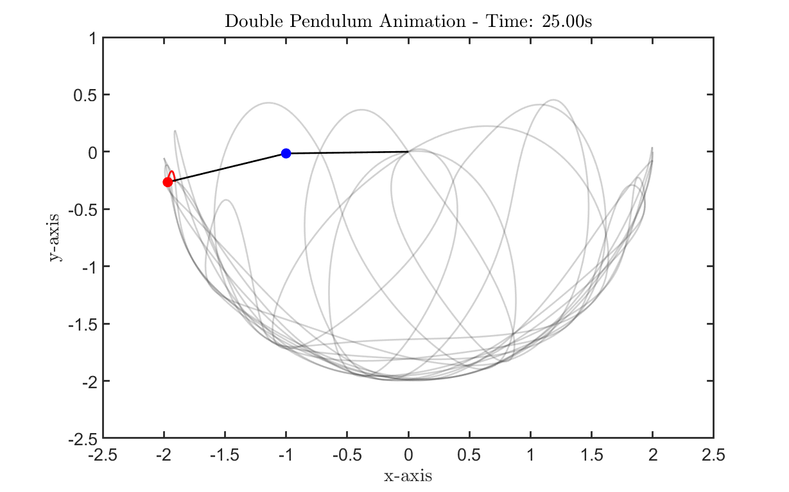
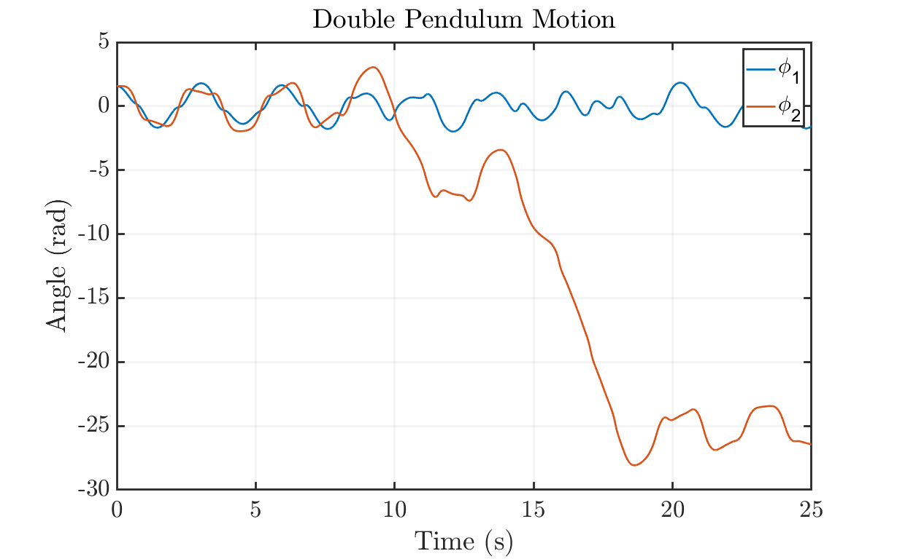
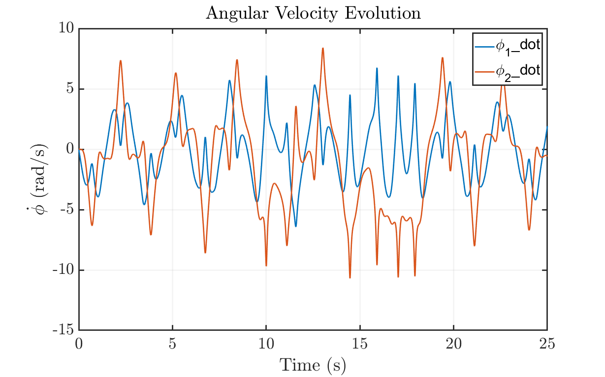
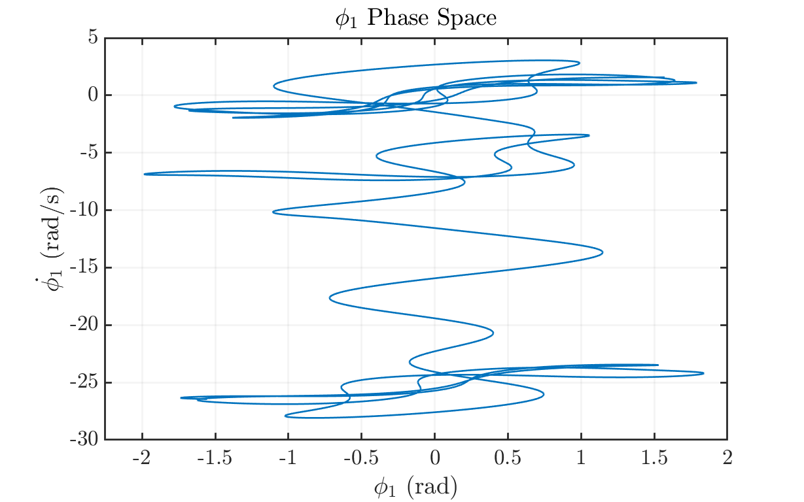
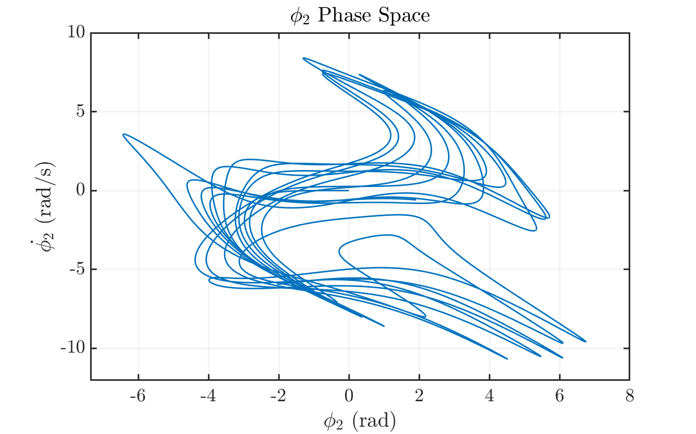

Contents
Double Pendulum Simulation
Author: Tyler Jones Contact: tjjones6@wisc.edu Institution: University of Wisconsin-Madison Date: 05.27.2024
Description: This code simulates a double pendulum using RK45 (ode45) as the chosen numerical scheme. The pendulum's trajectory is then mapped onto an animation figure. Finally, plots of angular evolution, angular velocity evolution, and respective phase spaces are generated.
clear all; close all; clc;
User Input
Define Parameters
g = 9.81; % Acceleration due to gravity (m/s^2) L1 = 1.0; % Length of the first pendulum arm (m) L2 = 1.0; % Length of the second pendulum arm (m) m1 = 1.0; % Mass of the first pendulum bob (kg) m2 = 1.0; % Mass of the second pendulum bob (kg) % Initial Conditions theta1_0 = pi/2; % Initial angle of the first pendulum (radians) theta2_0 = pi/2; % Initial angle of the second pendulum (radians) omega1_0 = 0; % Initial angular velocity of the first pendulum (rad/s) omega2_0 = 0; % Initial angular velocity of the second pendulum (rad/s) % Time Settings tspan = [0 25]; % Extend the time span for simulation (seconds)
Numerical Integration using ODE45
options = odeset('RelTol', 1e-6, 'AbsTol', 1e-6); [t, y] = ode45(@(t, y) doublePendulumODE(t, y, g, L1, L2, m1, m2), tspan, [theta1_0, omega1_0, theta2_0, omega2_0], options); % Extracting and Converting Data theta1 = y(:, 1); theta2 = y(:, 3); x1 = L1*sin(theta1); y1 = -L1*cos(theta1); x2 = x1 + L2*sin(theta2); y2 = y1 - L2*cos(theta2);
Animation
Initialize an array to store frames for the animation
frames = []; % Create a figure for the animation (The figure will initially display as empty) animationFig = figure('units','normalized','Position',[0.1 0.1 .8 .8]); myfigpref % Storing animation data % myWriter = VideoWriter('DoublePendulumAnimation.mp4', 'MPEG-4'); % myWriter.FrameRate = 30; % open(myWriter); % Set manual axes limits for animation animationLimits = [-2.5 2.5 -2.5 1]; % Adjust as needed % Set initial axes limits axis(animationLimits); for i = 1:length(t) % Plot the trajectory plot(x2(1:i), y2(1:i), 'Color',[0.1 0.1 0.1 0.2]) if i > 20 plot(x2(i-20:i), y2(i-20:i), '-r') end % Update the position of the pendulum bobs and rods in the animation plot plot([0, x1(i)], [0, y1(i)], 'k', 'LineWidth', 2); % Rod for Pendulum 1 hold on; plot([x1(i), x2(i)], [y1(i), y2(i)], 'k', 'LineWidth', 2); % Rod for Pendulum 2 plot(x1(i), y1(i), 'bo', 'MarkerSize', 10, 'MarkerFaceColor', 'b'); % Mass for Pendulum 1 plot(x2(i), y2(i), 'ro', 'MarkerSize', 10, 'MarkerFaceColor', 'r'); % Mass for Pendulum 2 fig_xytit('x-axis','y-axis',['Double Pendulum Animation - Time: ', num2str(t(i), '%.2f'), 's']) % Set initial y-axis limits ylim(animationLimits(3:4)); xlim(animationLimits(1:2)); % Capture the current frame for the animation frame = getframe(animationFig); frames = [frames, frame]; % writeVideo(myWriter,frame); % Clear the previous frame in the animation plot if i < length(t) cla(animationFig); end end % Close the animation figure % close(animationFig); % close(myWriter) % Display the animation % figure('units','normalized','Position',[0.1 0.1 .8 .8]) % movie(frames, 1, 30); % Play the animation at 30 frames per second
Plotting Results
Plot angle evolution
figure('units','normalized','Position',[0.1 0.1 .8 .8]) hold on; grid on; myfigpref plot(t, y(:, 1), t, y(:, 3)) fig_xytit('Time (s)', 'Angle (rad)', 'Double Pendulum Motion'); legend('\phi_1', '\phi_2'); hold off; % Plot angular velocity evolution figure('units','normalized','Position',[0.1 0.1 .8 .8]) hold on; grid on; myfigpref plot(t, y(:, 2), t, y(:, 4)) fig_xytit('Time (s)', '$\dot{\phi}$ (rad/s)', 'Angular Velocity Evolution') legend('\phi_1\_dot', '\phi_2\_dot'); hold off; % Phase Space of Pendulum 1 figure('units','normalized','Position',[0.1 0.1 .8 .8]) hold on; grid on; axis padded; myfigpref plot(y(:,1), y(:,3)) fig_xytit('$\phi_1$ (rad)', '$\dot{\phi_1}$ (rad/s)', '$\phi_1$ Phase Space') hold off; % Phase Space of Pendulum 2 figure('units','normalized','Position',[0.1 0.1 .8 .8]) hold on; grid on; axis padded; myfigpref plot(y(:,2), y(:,4)) fig_xytit('$\phi_2$ (rad)', '$\dot{\phi_2}$ (rad/s)', '$\phi_2$ Phase Space') hold off;   
Define the function for the double pendulum ODEs
function dydt = doublePendulumODE(~, y, g, L1, L2, m1, m2) % Unpack the state variables theta1 = y(1); omega1 = y(2); theta2 = y(3); omega2 = y(4); % Equations of motion for the double pendulum dydt = zeros(4, 1); % empty row vector dydt(1) = omega1; dydt(2) = (-g * (2 * m1 + m2) * sin(theta1) - m2 * g * sin(theta1 - 2 * theta2) - 2 * sin(theta1 - theta2) * m2 * (omega2^2 * L2 + omega1^2 * L1 * cos(theta1 - theta2))) / (L1 * (2 * m1 + m2 - m2 * cos(2 * theta1 - 2 * theta2))); dydt(3) = omega2; dydt(4) = (2 * sin(theta1 - theta2) * (omega1^2 * L1 * (m1 + m2) + g * (m1 + m2) * cos(theta1) + omega2^2 * L2 * m2 * cos(theta1 - theta2))) / (L2 * (2 * m1 + m2 - m2 * cos(2 * theta1 - 2 * theta2))); end
Reference Functions for Plotting
function myfigpref set(0, 'DefaultAxesFontSize', 20); set(0, 'DefaultAxesLineWidth', 2); set(0, 'DefaultLineLineWidth', 2); set(0, 'DefaultPatchLineWidth', .7); set(0, 'DefaultLineMarkerSize', 6); grid on; box on; h = gca; h.TickLabelInterpreter='latex'; h.MinorGridAlpha=0.05; h.GridAlpha=0.05; h.FontSize=25; h.LineWidth=2; h = gcf; h.Color = [1,1,1]; end function fig_xytit(xlab, ylab, tit) if nargin < 3 tit = ''; end xlabel(xlab, 'interpreter', 'latex'); ylabel(ylab, 'interpreter', 'latex'); title(tit, 'interpreter', 'latex'); end